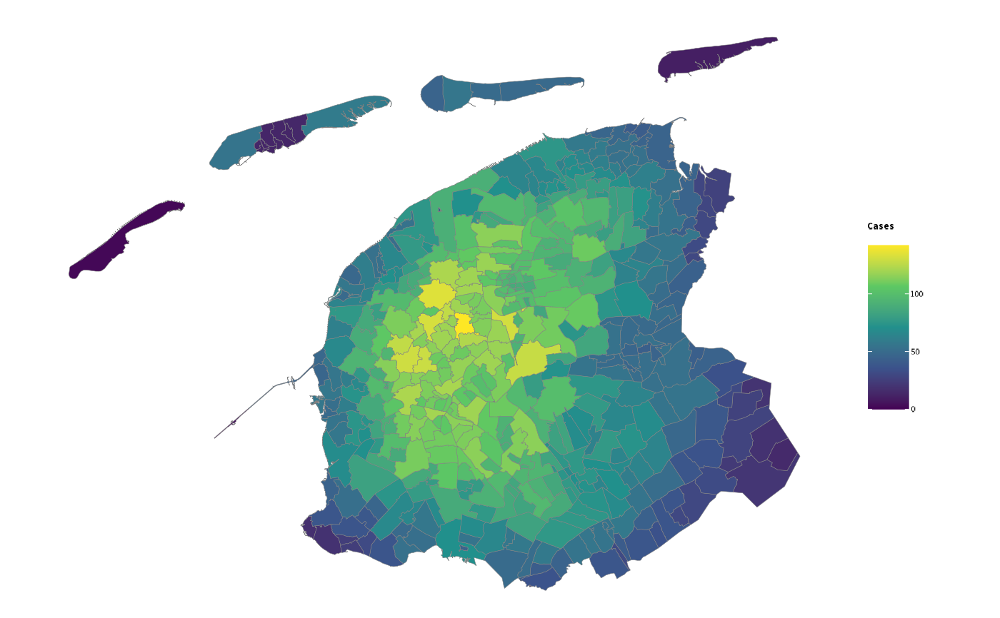

Based on the postcodes4_afstanden data set, this function determines the specified minimum number of cases within a certain radius.
cases_within_radius(
data,
radius_km = 10,
minimal_cases = 10,
column_count = NULL,
...
)data set containing a column 'postcode'
radius in kilometres from each zip code. The search *diameter* is twice this number (since zip codes e.g. to the west and to the east are searched).
minimum number of cases to search for
column name in data with the number of case counts
ignored, allows for future extensions
noro <- data.frame(postcode = c(9000:9100),
n = floor(runif(101, 0, 3)))
radial_check <- cases_within_radius(noro, radius_km = 10, minimal_cases = 10)
#> Using column 'n' for cases_within_radius()
#> Found 28 cases within 10 km of 9000
#> Found 41 cases within 10 km of 9001
#> Found 55 cases within 10 km of 9003
#> Found 55 cases within 10 km of 9004
#> Found 62 cases within 10 km of 9005
#> Found 44 cases within 10 km of 9006
#> Found 40 cases within 10 km of 9007
#> Found 41 cases within 10 km of 9008
#> Found 39 cases within 10 km of 9009
#> Found 39 cases within 10 km of 9011
#> Found 41 cases within 10 km of 9012
#> Found 31 cases within 10 km of 9013
#> Found 28 cases within 10 km of 9014
#> Found 41 cases within 10 km of 9021
#> Found 53 cases within 10 km of 9022
#> Found 61 cases within 10 km of 9023
#> Found 54 cases within 10 km of 9024
#> Found 61 cases within 10 km of 9025
#> Found 64 cases within 10 km of 9026
#> Found 61 cases within 10 km of 9027
#> Found 64 cases within 10 km of 9031
#> Found 63 cases within 10 km of 9032
#> Found 69 cases within 10 km of 9033
#> Found 70 cases within 10 km of 9034
#> Found 59 cases within 10 km of 9035
#> Found 59 cases within 10 km of 9036
#> Found 41 cases within 10 km of 9037
#> Found 58 cases within 10 km of 9038
#> Found 43 cases within 10 km of 9041
#> Found 37 cases within 10 km of 9043
#> Found 50 cases within 10 km of 9044
#> Found 56 cases within 10 km of 9045
#> Found 35 cases within 10 km of 9047
#> Found 61 cases within 10 km of 9051
#> Found 44 cases within 10 km of 9053
#> Found 38 cases within 10 km of 9054
#> Found 61 cases within 10 km of 9055
#> Found 63 cases within 10 km of 9056
#> Found 64 cases within 10 km of 9057
#> Found 47 cases within 10 km of 9061
#> Found 39 cases within 10 km of 9062
#> Found 28 cases within 10 km of 9063
#> Found 38 cases within 10 km of 9064
#> Found 26 cases within 10 km of 9067
#> Found 37 cases within 10 km of 9071
#> Found 26 cases within 10 km of 9072
#> Found 30 cases within 10 km of 9073
#> Found 36 cases within 10 km of 9074
#> Found 24 cases within 10 km of 9075
#> Found 42 cases within 10 km of 9076
#> Found 51 cases within 10 km of 9077
#> Found 36 cases within 10 km of 9078
#> Found 37 cases within 10 km of 9079
#> Found 58 cases within 10 km of 9081
#> Found 54 cases within 10 km of 9082
#> Found 58 cases within 10 km of 9083
#> Found 70 cases within 10 km of 9084
#> Found 61 cases within 10 km of 9085
#> Found 61 cases within 10 km of 9086
#> Found 56 cases within 10 km of 9087
#> Found 70 cases within 10 km of 9088
#> Found 54 cases within 10 km of 9089
#> Found 51 cases within 10 km of 9091
radial_check
#> postcode cases_within_range
#> 1 9000 28
#> 2 9001 41
#> 3 9003 55
#> 4 9004 55
#> 5 9005 62
#> 6 9006 44
#> 7 9007 40
#> 8 9008 41
#> 9 9009 39
#> 10 9011 39
#> 11 9012 41
#> 12 9013 31
#> 13 9014 28
#> 14 9021 41
#> 15 9022 53
#> 16 9023 61
#> 17 9024 54
#> 18 9025 61
#> 19 9026 64
#> 20 9027 61
#> 21 9031 64
#> 22 9032 63
#> 23 9033 69
#> 24 9034 70
#> 25 9035 59
#> 26 9036 59
#> 27 9037 41
#> 28 9038 58
#> 29 9041 43
#> 30 9043 37
#> 31 9044 50
#> 32 9045 56
#> 33 9047 35
#> 34 9051 61
#> 35 9053 44
#> 36 9054 38
#> 37 9055 61
#> 38 9056 63
#> 39 9057 64
#> 40 9061 47
#> 41 9062 39
#> 42 9063 28
#> 43 9064 38
#> 44 9067 26
#> 45 9071 37
#> 46 9072 26
#> 47 9073 30
#> 48 9074 36
#> 49 9075 24
#> 50 9076 42
#> 51 9077 51
#> 52 9078 36
#> 53 9079 37
#> 54 9081 58
#> 55 9082 54
#> 56 9083 58
#> 57 9084 70
#> 58 9085 61
#> 59 9086 61
#> 60 9087 56
#> 61 9088 70
#> 62 9089 54
#> 63 9091 51
if (require("certeplot2")) {
radial_check %>%
add_map() %>%
filter_geolocation(provincie == "Friesland") %>%
plot2(category = cases_within_range,
datalabels = FALSE,
colour_fill = "viridis")
}
#> Joining, by postcode
